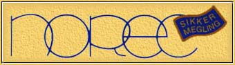

Erland Morud Statsautorisert Eiendomsmegler AS er en
direkte videreføring av det personlige, ansvarlige meglerfirma, Erland Morud,
registrert den 16. oktober 1950.
Vårt kontor er i Fr. Nansen plass 9, ved Rådhuset.
Vi har spesialisert oss på salg av boliger i Oslo vest, sentralt og i villaområdene,
Nordstrandsområdet, eksklusive fritidseiendommer samt formidling av næringseiendommer,
salg og utleie. Erland Morud Statsautorisert Eiendomsmegler AS er blant markedslederne i Oslo innenfor
disse områdene. Vi er tilsammen 8 medarbeidere, hvorav 3 statsautoriserte eiendomsmeglere.
I tillegg til eiendomsmegling driver vi Erland Morud Eiendomsforvaltning AS, som
har spesialisert seg på forvaltning og regnskapsførsel. Dette selskap har samme adresse som
meglerfirmaet, og har 3 medarbeidere.
Erland Morud Statsautorisert Eiendomsmegler AS
Fr. Nansens pl. 9, 0160 Oslo
Telefon 22 42 96 80 - Telefax 22 41 51 46
